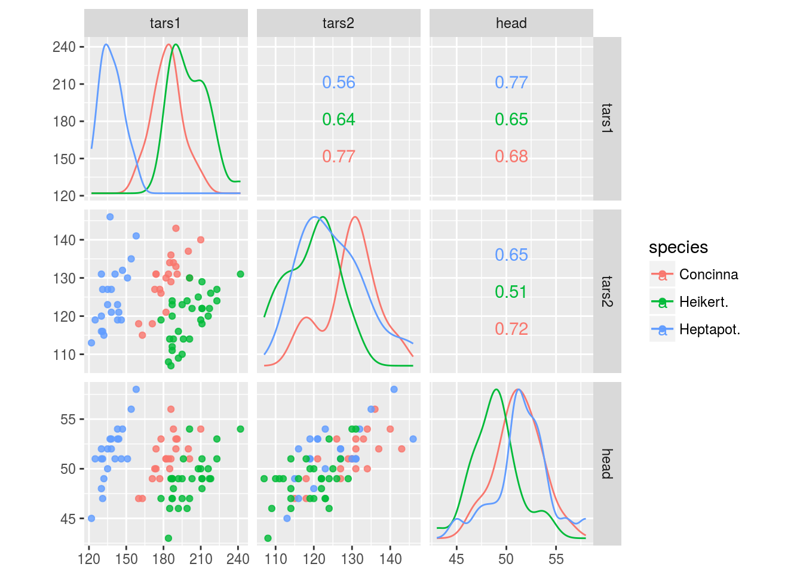

GGally
データ分析を行うにあたってデータの分布を確認しておくことは重要なポイントのひとつです。データの分布を確認する基本的な方法としては、ヒストグラム、箱ひげ図、散布図などありますが、データ項目が多いとグラフを描くのも一苦労です。そこで、利用したいのが複数のグラフ（ペアプロットなど）を一度に描けるGGallyパッケージです。ただし、ペアプロットは描くグラフの数がデータ項目数の二乗個になりますので相応の処理時間がかかります。
必要なパッケージ
本ページのコードを実行するには標準パッケージ以外に以下の追加パッケージを読み込んでおく必要があります。
| Package | Description |
|---|---|
| tidyverse | Easily Install and Load the ‘Tidyverse’ |
| GGally | Extension to ‘ggplot2’ |
対象データ
以下のデータセットを用います。
| Dataset | Package |
|---|---|
| iris | datasets |
| mtcars | datasets |
| diamonds | ggplot2 |
GGally::ggpairs
irisデータセットをGGally::ggpairs関数を用いてプロットしてみます。
iris %>%
GGally::ggpairs()
ggplot2パッケージがベースなのでggplot2パッケージの関数と同様の指定が可能です。例えばSpeciesで層別して色分けしたい場合はggplot2パッケージと同様にggplot2::aes関数を用います。
iris %>%
GGally::ggpairs(ggplot2::aes(colour = Species, alpha = 0.5))
require(tidyverse)
mtcars %>%
GGally::ggpairs(mapping = aes(color = cyl),
upper = list(continuous = "smooth"), lower = list(combo = "facetdensity"),
diag = list(continuous = "barDiag"))
n <- 15
TestData <- data.frame(Group = sample(paste0("Group", 1:5), n, replace = TRUE),
Data1 = rnorm(n),
Data2 = rnorm(n) + rnorm(n) + rnorm(n),
Data3 = sample(0:1, n, replace = TRUE),
Data4 = sample(LETTERS[1:26], n, replace = TRUE))
GGally::ggpairs(data = TestData, columns = c(1, 5, 2, 3), mapping = aes(color = Group),
upper = list(continuous = "smooth"), lower = list(combo = "facetdensity"),
diag = list(continuous = "barDiag"))ggplot2::diamonds %>%
dplyr::select(-color, -clarity, -x, -y, -z) %>%
GGally::ggpairs(ggplot2::aes(colour = cut, alpha = 0.6))
ggplot2::diamonds %>%
dplyr::select(-cut, -clarity) %>%
GGally::ggpairs(ggplot2::aes(colour = color, alpha = 0.6))
ggplot2::diamonds %>%
dplyr::select(-cut, -color) %>%
GGally::ggpairs(ggplot2::aes(colour = clarity, alpha = 0.6))
ggplot2::diamonds %>%
GGally::ggpairs()
ggcoef
モデルの95%信頼区間を図示します。利用できるモデルはlmならびにglmの他にbroomパッケージで整然データ（tidy data）にできるモデルです。
iris %>%
lm(Sepal.Length ~ Sepal.Width, data = .) %>%
summary()##
## Call:
## lm(formula = Sepal.Length ~ Sepal.Width, data = .)
##
## Residuals:
## Min 1Q Median 3Q Max
## -1.5561 -0.6333 -0.1120 0.5579 2.2226
##
## Coefficients:
## Estimate Std. Error t value Pr(>|t|)
## (Intercept) 6.5262 0.4789 13.63 <2e-16 ***
## Sepal.Width -0.2234 0.1551 -1.44 0.152
## ---
## Signif. codes: 0 '***' 0.001 '**' 0.01 '*' 0.05 '.' 0.1 ' ' 1
##
## Residual standard error: 0.8251 on 148 degrees of freedom
## Multiple R-squared: 0.01382, Adjusted R-squared: 0.007159
## F-statistic: 2.074 on 1 and 148 DF, p-value: 0.1519iris %>%
lm(Sepal.Length ~ Sepal.Width, data = .) %>%
GGally::ggcoef(errorbar_color = "blue", errorbar_height = .1) +
ggrepel::geom_label_repel(ggplot2::aes(label = round(estimate, 2)))## Loading required package: broom
# ggplot2::geom_label(ggplot2::aes(label = round(estimate, 2)), nudge_y = 0.15)
ただし、モデルの推定値としてestimate項、推定値の項目名としてterm項が含まれている必要がありますので、多重比較の場合は描画前にちょっとした前処理が必要な場合もあります。前述のグラフの箱ひげ図をみるとirisデータセットのPetal.WidthがSpeciesにより有意差があるように見えましたので多重比較を用いて確認してみます。
aov(Petal.Width ~ Species, data = iris) %T>%
TukeyHSD() %>%
broom::tidy()aov(Petal.Width ~ Species, data = iris) %>%
TukeyHSD() %>%
broom::tidy() %>%
dplyr::select(-term) %>%
dplyr::rename(term = comparison) %>%
GGally::ggcoef(errorbar_color = "blue", errorbar_height = .1)